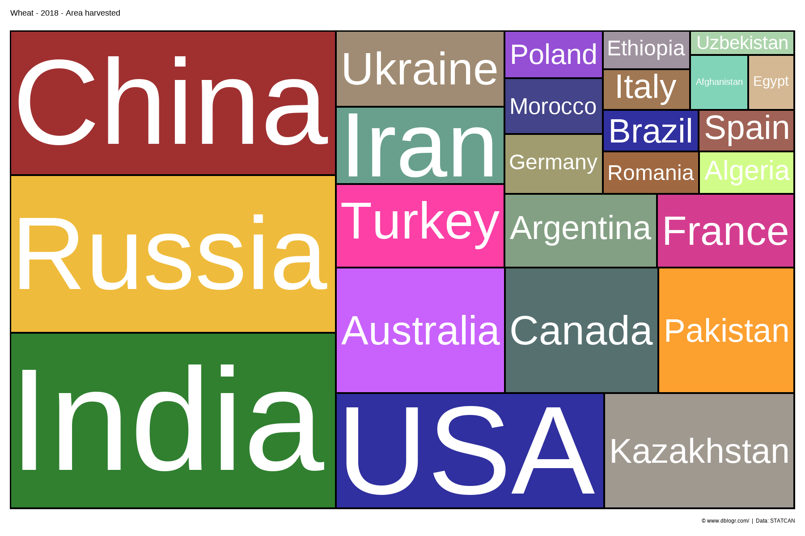
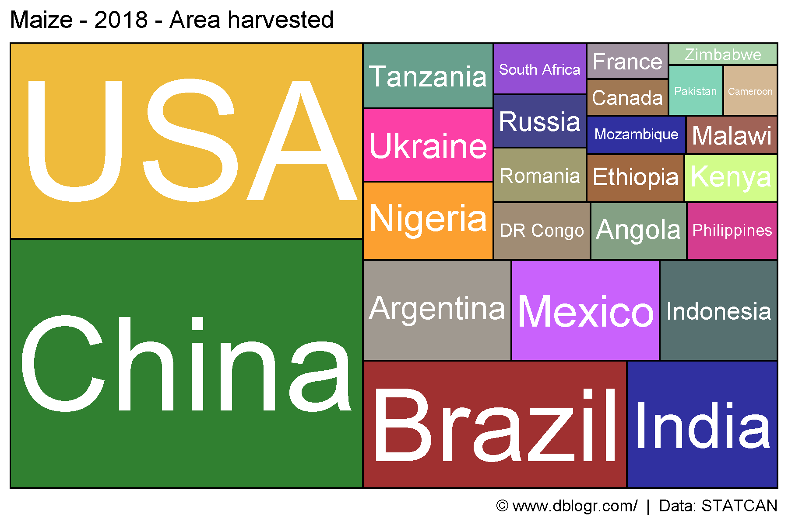
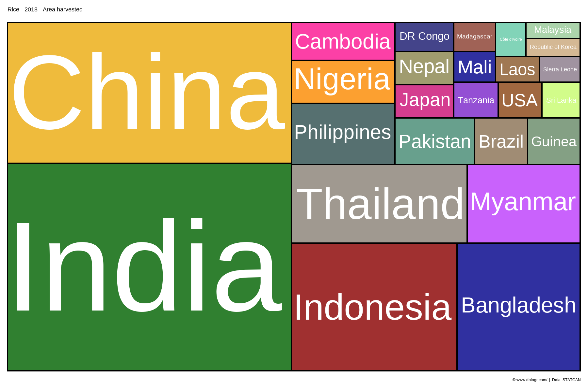
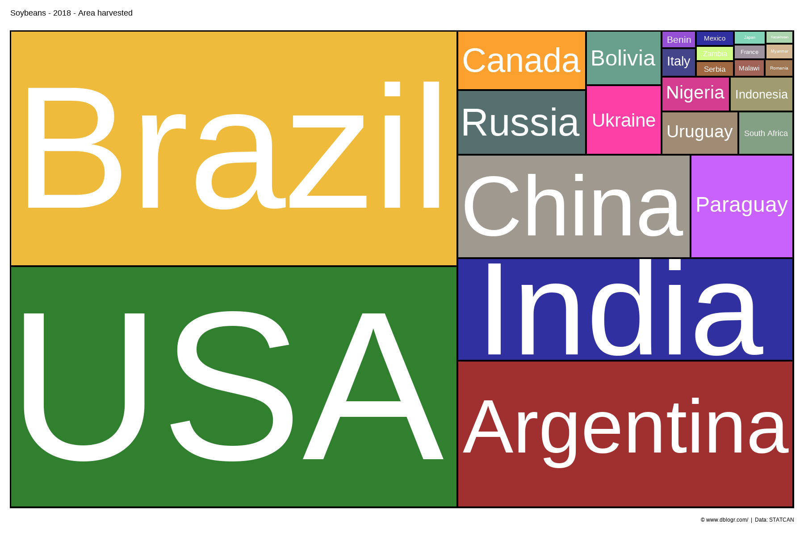
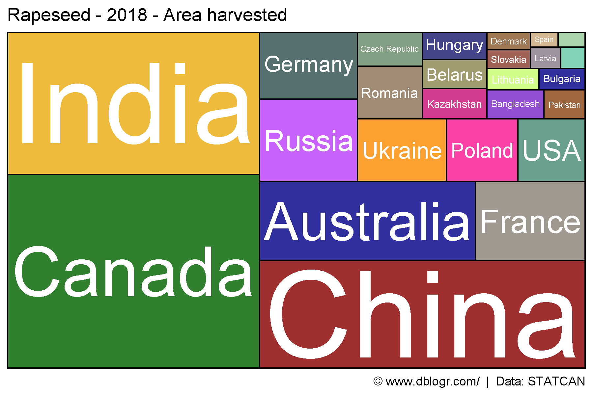
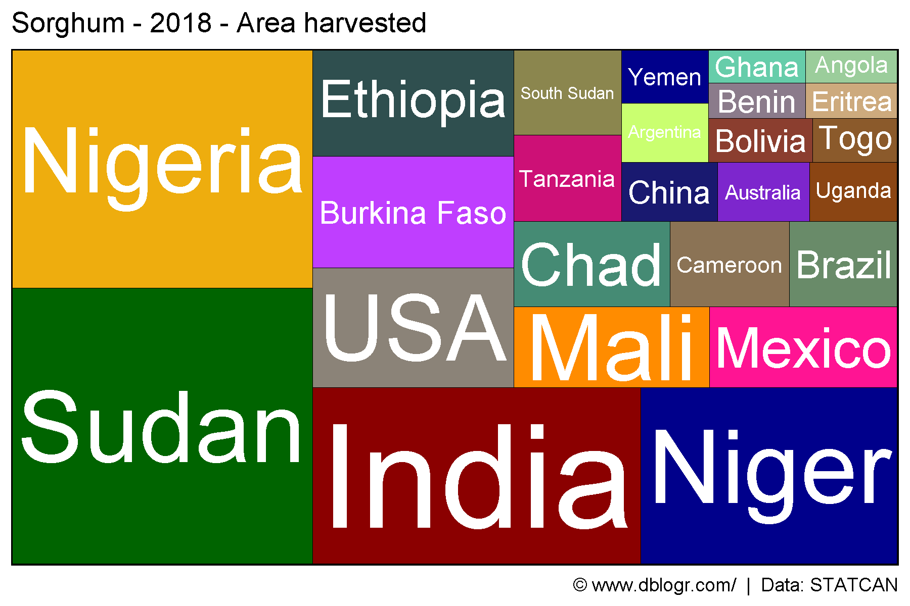
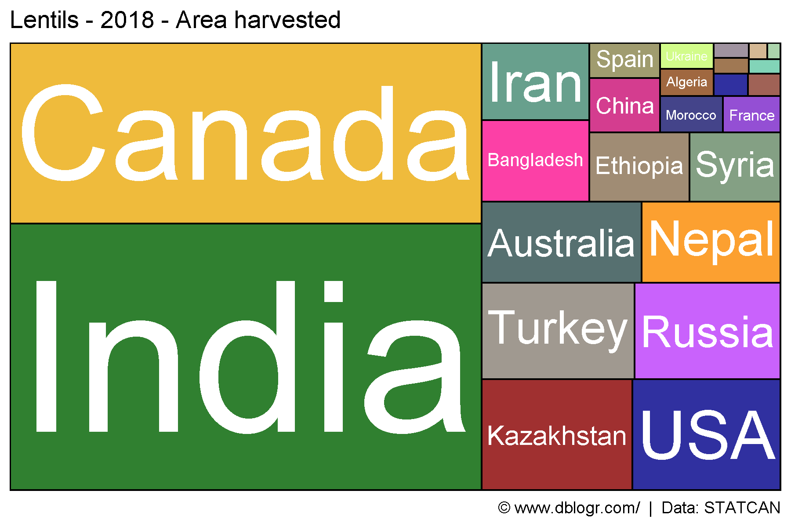
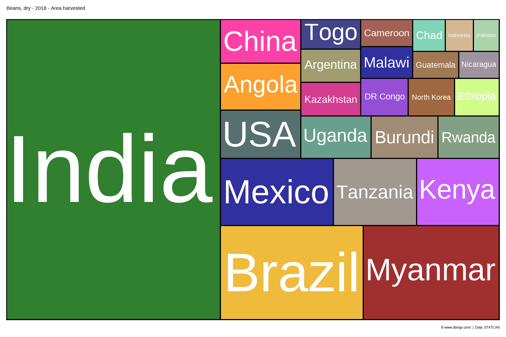
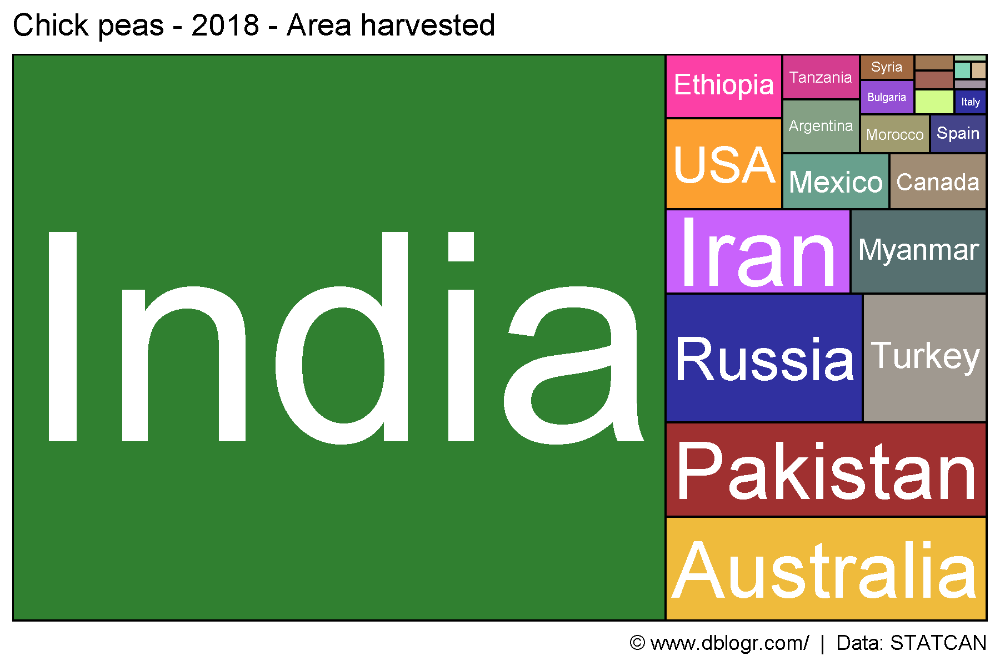

# devtools::install_github("derekmichaelwright/agData")
library(agData) # Loads: tidyverse, ggpubr, ggbeeswarm, ggrepel
library(treemapify) # geom_treemap()gg_treemap <- function(crop = "Wheat", measurement = "Area harvested", year = 2018) {
#Prep data
xx <- agData_FAO_Crops %>%
filter(Crop == crop, Year == year, Measurement == measurement,
Area %in% agData_FAO_Country_Table$Country) %>%
arrange(desc(Value)) %>%
slice(1:25) %>%
mutate(Area = factor(Area, levels = unique(Area)))
# Plot
ggplot(xx, aes(area = Value, fill = Area, label = Area)) +
geom_treemap(color = "black") +
geom_treemap_text(place = "centre", grow = T, color = "white") +
scale_fill_manual(values = alpha(agData_Colors, 0.75)) +
theme_agData(legend.position = "none") +
labs(title = paste(crop,"-",year,"-",measurement),
caption = "\xa9 www.dblogr.com/ | Data: STATCAN")
}mp <- gg_treemap(crop = "Wheat")
ggsave("crop_treemaps_wheat.png", mp, width = 6, height = 4)
mp <- gg_treemap(crop = "Maize")
ggsave("crop_treemaps_maize.png", mp, width = 6, height = 4)
mp <- gg_treemap(crop = "Rice")
ggsave("crop_treemaps_rice.png", mp, width = 6, height = 4)
mp <- gg_treemap(crop = "Soybeans")
ggsave("crop_treemaps_soybeans.png", mp, width = 6, height = 4)
mp <- gg_treemap(crop = "Rapeseed")
ggsave("crop_treemaps_rapeseed.png", mp, width = 6, height = 4)
mp <- gg_treemap(crop = "Sorghum")
ggsave("crop_treemaps_sorghum.png", mp, width = 6, height = 4)
mp <- gg_treemap(crop = "Lentils")
ggsave("crop_treemaps_lentils.png", mp, width = 6, height = 4)
mp <- gg_treemap(crop = "Beans, dry")
ggsave("crop_treemaps_beans.png", mp, width = 6, height = 4)
mp <- gg_treemap(crop = "Chick peas")
ggsave("crop_treemaps_chickpeas.png", mp, width = 6, height = 4)
# Prep data
crops <- unique(agData_FAO_Crops$Crop)
# Plot
pdf("crop_treemaps_fao.pdf", width = 6, height = 4)
for(i in crops) {
print(gg_treemap(crop = i))
}
dev.off()## png
## 2PDF: crop_treemaps.pdf
© Derek Michael Wright www.dblogr.com/